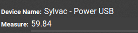

Conectar una herramienta de medición¶
Con la caja IoT de Odoo, puede conectar herramientas de medición a la base de datos de Odoo para usarlas en la aplicación Calidad en un punto de calidad o una revisión de calidad, o para usarlo en un centro de trabajo durante un proceso de fabricación.
Consulte la lista de dispositivos compatibles aquí: dispositivos compatibles.
Conectar con una USB¶
Para agregar un dispositivo conectado por USB, conecte el cable con la caja IoT y el dispositivo aparecerá en la base de datos de Odoo.

Conectar con Bluetooth¶
Active la función de Bluetooth en el dispositivo (consulte el manual del dispositivo para obtener más información) y la caja IoT se conectará automáticamente al dispositivo.

Vincule una herramienta de medición a un punto de control de calidad en el proceso de fabricación¶
En la aplicación Calidad un dispositivo se puede configurar en un punto de control de calidad. Para ello, vaya a , y abra el punto de control deseado al que debe estar vinculada la herramienta de medición.
Después, edite el punto de control seleccionando el campo Tipo y haciendo clic en Medición en el menú desplegable. Al hacerlo, se mostrará un campo llamado Dispositivo donde puede seleccionar el dispositivo adjunto.
Además, puede configurar los campos Norma y Tolerancia. Si lo requiere, Guarde los cambios.
La herramienta de medición está vinculada al punto de control de calidad elegido. El valor, que generalmente debe modificar manualmente, se actualiza de manera automática mientras usa la herramienta.
Truco
También puede acceder a los puntos de control de calidad en la aplicación , y seleccionar el dispositivo. Hay una pestaña de Puntos de control de calidad donde se pueden agregar con el dispositivo.
Nota
En un formulario detallado de una revisión de calidad, el Tipo de revisión se puede especificar en Medición. Acceda a una nueva página de detalles del control de calidad en la aplicación .
Ver también
Vincular una herramienta de medición a un centro de trabajo en la aplicación Fabricación¶
Para vincular una herramienta de medición a una acción, primero necesita configurarla a un centro de trabajo. Para ello, vaya a a . Luego, seleccione el centro de trabajo deseado en el que usará la herramienta de medición.
En la página del centro de trabajo, agregue el dispositivo en la pestaña Activadores IoT en la columna Dispositivo seleccionando Agregar una línea. Luego, puede vincular la herramienta de medición a la opción en el menú desplegable de Acción que aparece como Tomar medidas. Puede agregar también una clave para activar la acción.
Importante
Tenga en cuenta que se elije el primer activador en la lista. El orden de los activadores es importantes y puede arrastrarlos en el orden que desee.
Nota
En la pantalla de Orden de trabajo, un estado gráfico indica si la base de datos está conectada correctamente a la herramienta de medición.
Ver también